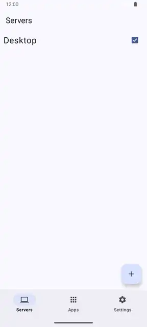
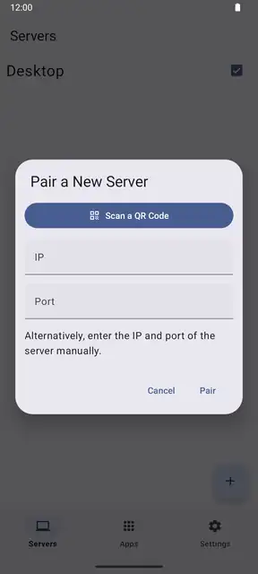

Android 2 Linux Notifications
أدوات النظام
Android 2 Linux Notifications ( A2LN ) is a way to display your Android phone notifications on your Linux computer. It consists of an app on your phone and a server on your computer which communicate securely over LAN.
✓ ترخيص مفتوح (GPL-3.0-only) · آخر تحديث: 2026-06-14
1.4.3الإصدار
13.9 MBالحجم
GPL-3.0-onlyالرخصة
Open in Kanzتحميل APK (13.9 MB)
Download APK
SHA-256: c22f4c88c70a6bb0a6e2c87b178829e4c22e4e0634c3914a6f4899674ff6358f


امسح الكود لفتح صفحة التطبيق
Scan to open this app page
لو كنز مش متثبت عندك: نزّل متجر كنز.
Not installed? Get the Kanz store.